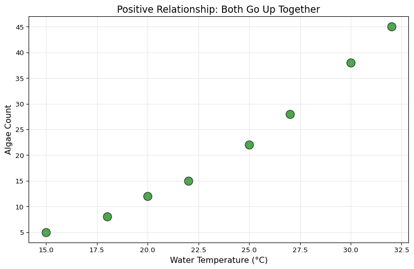
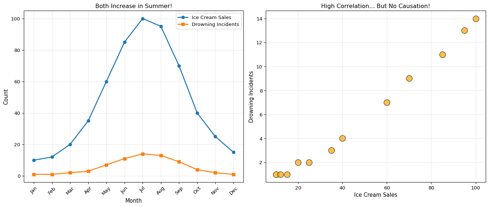

Scatterplots - Finding Relationships Between Variables
What Is a Scatterplot?
A scatterplot is a graph that shows if two things are related to each other.
Example questions we can answer: - When pH goes up, does nitrate go up too? - When it rains more, does the creek get more polluted? - Are temperature and pH connected?
Each dot on a scatterplot represents one measurement where you recorded BOTH values.
Why Scatterplots Matter for Water Quality
When you monitor streams, you’re measuring multiple things at once: - pH - Nitrate - Temperature - Dissolved oxygen - Turbidity (cloudiness)
The big question: Are any of these connected to each other?
Scatterplots help you discover relationships you might not see in a table of numbers!
Your First Scatterplot
Let’s say scientists measured pH and nitrate in a creek on 8 different days. Let’s see if they’re related:
import matplotlib.pyplot as plt# Example: pH and nitrate measurements from the same daysph_values = [7.0, 7.2, 7.1, 7.3, 7.2, 7.4, 7.1, 7.3]nitrate_values = [2.1, 2.8, 2.3, 3.2, 2.9, 3.5, 2.4, 3.1]# Create a scatterplotplt.figure(figsize=(10, 6))plt.scatter(ph_values, nitrate_values, s=150, alpha=0.7, edgecolors='black', color='blue')plt.xlabel('pH', fontsize=12)plt.ylabel('Nitrate (mg/L)', fontsize=12)plt.title('Does pH Relate to Nitrate?', fontsize=14)plt.grid(True, alpha=0.3)plt.show()print("Each dot represents one day of measurements")print("pH values:", ph_values)print("Nitrate values:", nitrate_values)
Each dot represents one day of measurements
pH values: [7.0, 7.2, 7.1, 7.3, 7.2, 7.4, 7.1, 7.3]
Nitrate values: [2.1, 2.8, 2.3, 3.2, 2.9, 3.5, 2.4, 3.1]
What do you see? As pH goes up, nitrate tends to go up too! That’s a relationship!
Types of Relationships
There are three main patterns you might see:
1. Positive Relationship ↗️
When one goes up, the other goes up too
import matplotlib.pyplot as pltimport numpy as np# Example: Temperature vs Algae Growth# (Warmer water = More algae)temperature = [15, 18, 20, 22, 25, 27, 30, 32]algae = [5, 8, 12, 15, 22, 28, 38, 45]plt.figure(figsize=(10, 6))plt.scatter(temperature, algae, s=150, alpha=0.7, edgecolors='black', color='green')plt.xlabel('Water Temperature (°C)', fontsize=12)plt.ylabel('Algae Count', fontsize=12)plt.title('Positive Relationship: Both Go Up Together', fontsize=14)plt.grid(True, alpha=0.3)plt.show()print("As temperature increases, algae increases!")print("This is a POSITIVE relationship ↗️")

As temperature increases, algae increases!
This is a POSITIVE relationship ↗️
2. Negative Relationship ↘️
When one goes up, the other goes down
import matplotlib.pyplot as plt# Example: pH vs Fish Population# (Too high pH = Fewer fish can survive)ph_levels = [6.5, 6.8, 7.0, 7.5, 8.0, 8.5, 9.0, 9.5]fish_count = [45, 42, 40, 35, 28, 20, 12, 5]plt.figure(figsize=(10, 6))plt.scatter(ph_levels, fish_count, s=150, alpha=0.7, edgecolors='black', color='orange')plt.xlabel('pH Level', fontsize=12)plt.ylabel('Fish Count', fontsize=12)plt.title('Negative Relationship: One Goes Up, Other Goes Down', fontsize=14)plt.grid(True, alpha=0.3)plt.show()print("As pH increases, fish count decreases!")print("This is a NEGATIVE relationship ↘️")
As pH increases, fish count decreases!
This is a NEGATIVE relationship ↘️
3. No Relationship (Random) 🤷
The dots are all over the place - no pattern!
import matplotlib.pyplot as pltimport numpy as np# Example: pH vs Day of the Week# (These probably aren't related!)np.random.seed(42)day_of_week = [1, 2, 3, 4, 5, 6, 7, 8, 9, 10]ph_random = [7.2, 7.0, 7.3, 7.1, 7.2, 7.3, 7.1, 7.0, 7.2, 7.1]plt.figure(figsize=(10, 6))plt.scatter(day_of_week, ph_random, s=150, alpha=0.7, edgecolors='black', color='purple')plt.xlabel('Day Number', fontsize=12)plt.ylabel('pH', fontsize=12)plt.title('No Relationship: Just Random!', fontsize=14)plt.grid(True, alpha=0.3)plt.show()print("No pattern here - pH doesn't depend on day number!")print("This is NO relationship 🤷")
No pattern here - pH doesn't depend on day number!
This is NO relationship 🤷
Try It: Create Your Own Scatterplot
Adding a Trend Line
A trend line (also called a “line of best fit”) helps you see the pattern more clearly:
import matplotlib.pyplot as pltimport numpy as np# Example data: Stream temperature vs dissolved oxygentemperature = [10, 15, 20, 25, 30, 35]oxygen = [11.0, 10.2, 9.0, 7.8, 6.5, 5.2]# Create scatterplotplt.figure(figsize=(10, 6))plt.scatter(temperature, oxygen, s=150, alpha=0.7, edgecolors='black', color='red')# Add trend linez = np.polyfit(temperature, oxygen, 1) # Calculate linep = np.poly1d(z)plt.plot(temperature, p(temperature), "r--", linewidth=2, label='Trend line')plt.xlabel('Temperature (°C)', fontsize=12)plt.ylabel('Dissolved Oxygen (mg/L)', fontsize=12)plt.title('Temperature vs Oxygen (with Trend Line)', fontsize=14)plt.legend(fontsize=11)plt.grid(True, alpha=0.3)plt.show()print("The red dashed line shows the overall trend")print("Warmer water holds less oxygen!")
The red dashed line shows the overall trend
Warmer water holds less oxygen!
Correlation: Measuring How Strong the Relationship Is
Scientists use a number called correlation (represented by “r”) to measure how strong a relationship is.
Correlation values: - r = +1: Perfect positive relationship (all dots on a line going up) - r = 0: No relationship (dots everywhere) - r = -1: Perfect negative relationship (all dots on a line going down)
import matplotlib.pyplot as pltimport numpy as np# Create examples with different correlationsnp.random.seed(42)fig, axes = plt.subplots(2, 3, figsize=(15, 10))correlations = [1.0, 0.8, 0.4, 0.0, -0.4, -0.9]titles = ['Perfect Positive\n(r = 1.0)', 'Strong Positive\n(r ≈ 0.8)', 'Weak Positive\n(r ≈ 0.4)', 'No Relationship\n(r ≈ 0.0)','Weak Negative\n(r ≈ -0.4)', 'Strong Negative\n(r ≈ -0.9)']for idx, (ax, target_r, title) inenumerate(zip(axes.flat, correlations, titles)):# Generate correlated data x = np.random.normal(0, 1, 30)if target_r ==0: y = np.random.normal(0, 1, 30)else: noise = np.random.normal(0, np.sqrt(1- target_r**2), 30) y = target_r * x + noise actual_r = np.corrcoef(x, y)[0, 1] ax.scatter(x, y, alpha=0.6, s=50, edgecolors='black') ax.set_title(f'{title}\nActual r = {actual_r:.2f}', fontsize=10) ax.grid(True, alpha=0.3)# Add trend line if there's correlationifabs(target_r) >0.1: z = np.polyfit(x, y, 1) p = np.poly1d(z) x_sorted = np.sort(x) ax.plot(x_sorted, p(x_sorted), "r--", linewidth=2, alpha=0.7)plt.tight_layout()plt.show()print("Notice:")print("- Strong correlation = Dots close to the line")print("- Weak correlation = Dots scattered")print("- No correlation = Complete scatter, no pattern")
Notice:
- Strong correlation = Dots close to the line
- Weak correlation = Dots scattered
- No correlation = Complete scatter, no pattern
Important: Correlation Does NOT Mean Causation!
⚠️ BIG WARNING: Just because two things are correlated doesn’t mean one CAUSES the other!
Example: Ice cream sales and drowning deaths are correlated (both go up in summer). But ice cream doesn’t CAUSE drowning! 🍦≠💀
import matplotlib.pyplot as plt# Example: Ice cream sales and drowning incidents# Both increase in summer, but ice cream doesn't cause drowning!months = ['Jan', 'Feb', 'Mar', 'Apr', 'May', 'Jun', 'Jul', 'Aug', 'Sep', 'Oct', 'Nov', 'Dec']ice_cream_sales = [10, 12, 20, 35, 60, 85, 100, 95, 70, 40, 25, 15]drownings = [1, 1, 2, 3, 7, 11, 14, 13, 9, 4, 2, 1]fig, (ax1, ax2) = plt.subplots(1, 2, figsize=(14, 6))# Line plot over timeax1.plot(months, ice_cream_sales, marker='o', label='Ice Cream Sales', linewidth=2)ax1.plot(months, drownings, marker='s', label='Drowning Incidents', linewidth=2)ax1.set_xlabel('Month', fontsize=11)ax1.set_ylabel('Count', fontsize=11)ax1.set_title('Both Increase in Summer!', fontsize=12)ax1.legend()ax1.tick_params(axis='x', rotation=45)ax1.grid(True, alpha=0.3)# Scatterplotax2.scatter(ice_cream_sales, drownings, s=150, alpha=0.7, edgecolors='black', color='orange')ax2.set_xlabel('Ice Cream Sales', fontsize=11)ax2.set_ylabel('Drowning Incidents', fontsize=11)ax2.set_title('High Correlation... But No Causation!', fontsize=12)ax2.grid(True, alpha=0.3)plt.tight_layout()plt.show()correlation = np.corrcoef(ice_cream_sales, drownings)[0, 1]print(f"Correlation: {correlation:.3f} (very strong!)")print("\nBut ice cream doesn't cause drowning!")print("The REAL cause: WARM WEATHER")print("Warm weather → People buy ice cream")print("Warm weather → People go swimming → More drowning risk")

Correlation: 0.994 (very strong!)
But ice cream doesn't cause drowning!
The REAL cause: WARM WEATHER
Warm weather → People buy ice cream
Warm weather → People go swimming → More drowning risk
The hidden factor (warm weather) is called a “confounding variable”
Water Quality Examples
Example 1: Rainfall and Nitrate
import matplotlib.pyplot as pltimport numpy as np# Example: More rain might wash fertilizer into the creekrainfall = [0, 5, 10, 15, 20, 25, 30, 35, 40]nitrate = [2.0, 2.3, 2.8, 3.5, 4.2, 5.1, 6.0, 6.8, 7.5]plt.figure(figsize=(10, 6))plt.scatter(rainfall, nitrate, s=150, alpha=0.7, edgecolors='black', color='brown')# Add trend linez = np.polyfit(rainfall, nitrate, 1)p = np.poly1d(z)plt.plot(rainfall, p(rainfall), "r--", linewidth=2, label='Trend line')plt.axhline(y=10, color='red', linestyle=':', linewidth=2, alpha=0.5, label='EPA limit (10 mg/L)')plt.xlabel('Rainfall (mm)', fontsize=12)plt.ylabel('Nitrate (mg/L)', fontsize=12)plt.title('Rainfall vs Nitrate Levels', fontsize=14)plt.legend(fontsize=11)plt.grid(True, alpha=0.3)plt.show()correlation = np.corrcoef(rainfall, nitrate)[0, 1]print(f"Correlation: {correlation:.3f}")print("\nInterpretation: More rain = More nitrate")print("Why? Rain washes fertilizer from farms into the creek!")
Correlation: 0.993
Interpretation: More rain = More nitrate
Why? Rain washes fertilizer from farms into the creek!
Correlation: -0.999
Interpretation: Higher temperature = Slightly lower pH
Why? Warmer water can affect chemical reactions!
Try It: Find Your Own Relationships
Your Future: Real Buoy Data Scatterplots
When you deploy sensor buoys, you’ll collect MANY variables at once: - pH - Nitrate - Temperature - Dissolved Oxygen - Turbidity (cloudiness) - Conductivity
You can make scatterplots to discover: - Which factors are connected? - What affects water quality the most? - When do pollution events happen? - How do different measurements relate?
This is how real scientists find patterns in environmental data! 🌊🔬